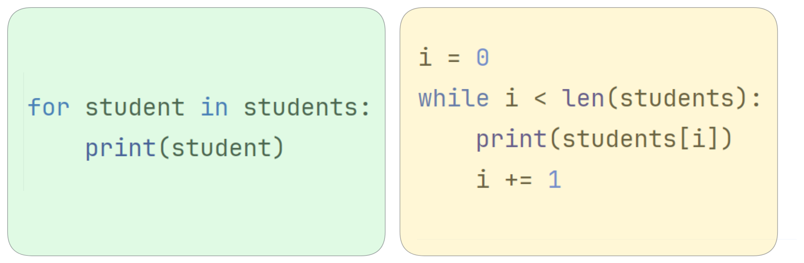

<p style="font-size: 16px; color: #999; margin:5px; position: absolute;"><a href="..">Homepage</a> | <a href="?print-pdf">Printable Version</a></p> <div style="display: flex; justify-content: center; align-items: center; height: 700px;"> <div style="text-align: center; padding: 40px; background-color: white; border: 2px solid rgb(0, 63, 163); border-radius: 20px; box-shadow: 0 0 20px rgba(0,0,0,0.1);"> <h1 style="font-size: 48px; font-weight: bold; margin-bottom: 20px; color: #333;">SI100B 2025 Fall Recitation</h1> <p style="font-size: 24px; color: #666;">Python 习题课要点</p> <p style="font-size: 16px; color: #999; margin-top: 20px; margin-bottom:5px">浮点数 · 循环 · 输入输出</p> </div> </div> <!--s--> ## Hint: 十进制 ↔ 二进制转换 ### 权重记忆法 - 每一位二进制位的权重是 2 的幂：`… 64, 32, 16, 8, 4, 2, 1` - 小数点右侧继续减半：`0.5, 0.25, 0.125, …` - 牢记这些权重后，只需做加减法就能完成进制互转 <img src="images/binary_1.png" width="80%" style="display:block;margin:12px auto;" alt="二进制各位权重" /> <!--v--> ## 示例：96.75 → 二进制 - 96 = 64 + 32 → 整数位写成 `1100000` - 0.75 = 0.5 + 0.25 → 小数位写成 `.11` - 合并得到 `1100000.11` (base 2) <img src="images/binary9675.png" width="80%" style="display:block;margin:32px auto 12px;" alt="96.75 的二进制拆分示意" /> <!--v--> ## 示例：0.3 -> 二进制 - 0.3 = 0.25 + 0.03125 + 0.015625 + 0.001953125 + ... - 也就是 0.3 = 2^-2 + 2^-5 + 2^-6 + 2^-9 + ... - 得到的二进制是 0.0100110011... (base 2) - 保留 10 bit 得到 0.0100110011(base 2) ≈ 0.2998 - 浮点数存储只能近似这个值，因此有精度损失 <!--v--> ## Hint: 用 math.isclose() 判断浮点数相等 ```python import math print(0.1 + 0.2 == 0.3) print(math.isclose(0.1 + 0.2, 0.3)) # out # False # True ``` <!--v--> ## Hint: 永远不要使用浮点数来表示钱 - 推荐方法一：使用整数存储最小货币单位 - 不用"元"作单位，而是用"分"作单位 - 19.99元 ⟹ 1999分 - 100.00元 ⟹ 10000分 - 优点：所有的计算都用整数完成，因为整数运算是完全精确的 - 推荐方法二：使用高精度十进制类型 - 原理：模拟人类十进制运算方法 ```python from decimal import Decimal print(Decimal('0.1') + Decimal('0.2') == Decimal('0.3')) # out # True ``` <!--s--> ## Hint: 把 “ = ” 运算符理解为 “起名字” <img src="images/name-binding.png" width="50%" style="display:block;margin:32px 12px;"/> <!--s--> ## Hint: 优先使用 for 循环 - while 循环：当条件为真时重复执行 - for 循环：遍历集合中每个元素 ```python students = ["Alice", "Bob", "Charlie"] ```  <!--v--> ## for 循环小技巧：enumerate() 将集合转换为另一个集合，新集合的每个元素都附带序号 ```python students = ["Alice", "Bob", "Charlie"] print(list(enumerate(students))) # 输出: [(0, 'Alice'), (1, 'Bob'), (2, 'Charlie')] ``` <!--v--> ## for 循环小技巧：enumerate() *需求：为马拉松选手颁奖，根据名单顺序打印出前三名的名次。* ```python # 输入 runners = ["张三", "李四", "王五"] # 输出： # 第 1 名: 张三 # 第 2 名: 李四 # 第 3 名: 王五 ``` **❌ 普通写法** ```python for i in range(len(runners)): rank = i + 1 print(f"第 {rank} 名: {runners[i]}") ``` <!--v--> ## for 循环小技巧：enumerate() *需求：为马拉松选手颁奖，根据名单顺序打印出前三名的名次。* ```python # 输入 runners = ["张三", "李四", "王五"] ``` **✅ 聪明写法** ```python # enumerate(runners) = [(0, "张三"), (1, "李四"), (2, "王五")] for rank, name in enumerate(runners): print(f"第 {rank + 1} 名: {name}") ``` **✅ 更聪明写法** ```python # enumerate(runners, start=1) = [(1, "张三"), (2, "李四"), (3, "王五")] for rank, name in enumerate(runners, start=1): print(f"第 {rank} 名: {name}") ``` <!--v--> ## for 循环小技巧：zip() **zip() 的功能**：将多个集合"拉链式"组合，创建新的元组集合 ```python names = ["Alice", "Bob", "Charlie"] scores = [85, 92, 78] print(list(zip(names, scores))) # 输出: [('Alice', 85), ('Bob', 92), ('Charlie', 78)] ``` <!--v--> ## for 循环小技巧：zip() *需求：同时遍历学生姓名和分数* **✅ 聪明写法** ```python names = ["Alice", "Bob", "Charlie"] scores = [85, 92, 78] for name, score in zip(names, scores): print(f"{name}: {score}") ``` <!--v--> ## for 循环小技巧：range() 生成等差数列集合 ```python # 一个参数: range(n) = [0, 1, 2, ..., n -1 ] print(list(range(3))) # out: [0, 1, 2] # 两个参数: range(s, e) = [s, s + 1, s + 2, ..., e - 1 ] print(list(range(1, 3))) # out: [1, 2] # 三个参数: range(s, e, d) = [s, s + d, s + 2d, ...] print(list(range(1, 3, 2))) # out: [1] print(list(range(5, 1, -1))) # out: [5, 4, 3, 2] ``` <!--s--> ## Hint: input() 永远是字符串 - 记得自行转换为需要的类型 ```python raw_age = input("请输入年龄: ") age = int(raw_age) print(f"明年你 {age + 1} 岁") ``` <!--v--> ## Hint: print 技巧 - print() 可以接受多个参数，默认用空格隔开 ```python print(1, 2, 3) # out # 1 2 3 ``` - 用 sep 参数控制分隔符 ```python print(1, 2, 3, sep = "🤣") # out # 1🤣2🤣3 ``` <!--v--> - print() 默认以换行符结尾 ```python print("hello") print("world") # out # hello # world ``` - 用 end 参数控制输出的结尾字符 ```python print("hello", end="~~~") print("world") # out # hello~~~world ``` <!--s--> <div style="display: flex; justify-content: center; align-items: center; height: 700px; "> <div style="text-align: center; padding: 40px; background-color: white; border-radius: 20px; box-shadow: 0 0 20px rgba(0,0,0,0.1);"> <div style="display: inline-block; padding: 20px 40px; border-radius: 10 px; margin-bottom: 20px;"> <h1 style="font-size: 48px; font-weight: bold; margin: 0; color: rgb(16, 33, 89)">Thanks for Listening</h1> </div> <p style="font-size: 24px; color: #666; margin: 0;">Any questions?</p> </div> </div>